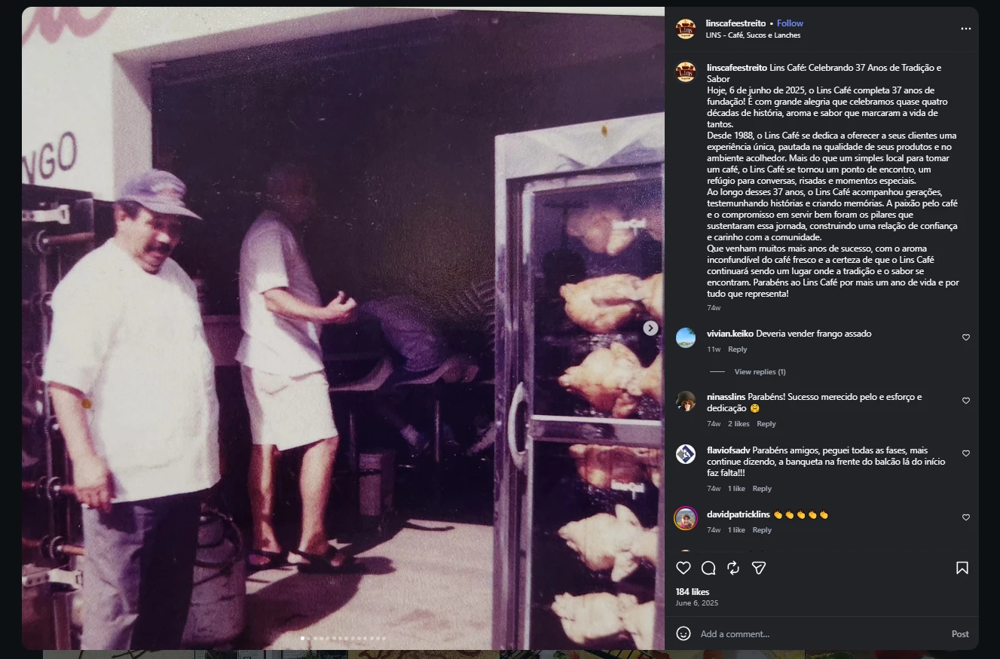

7h14
Abre cedo
Cafezinho e pão na chapa antes do trabalho. A porta abre quando o Estreito acorda.
A antiga Lanchonete Lins segue no mesmo lugar, servindo café passado na hora, sucos e lanches para quem trabalha, estuda ou só está de passagem pela Coronel Pedro Demoro.

Em 6 de junho de 1988 abria, na Rua Coronel Pedro Demoro, a Lanchonete Lins. O nome mudou com o tempo, o endereço não: seguimos atendendo no coração do Estreito.
São quase quatro décadas de clientes que viraram amigos, de gente que passou por todas as fases da casa e ainda lembra da banqueta na frente do balcão. A receita continua a mesma: café fresco, comida bem feita e atendimento de quem conhece você pelo nome.
Toque em uma categoria para ver em 3D. O cardápio completo, com preços do dia, fica no balcão.
As novidades da vitrine saem primeiro no Instagram.
Cafezinho e pão na chapa antes do trabalho. A porta abre quando o Estreito acorda.
Lanche rápido, suco gelado e um lugar para respirar no meio do dia.
Uma fatia de torta, um cafezinho e conversa boa até as 19h.
Rua Coronel Pedro Demoro, 1955, loja 01A
Estreito, Florianópolis – SC, 88075-301